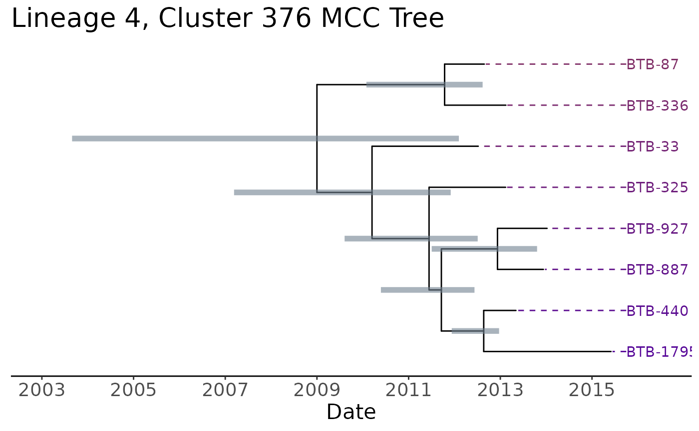
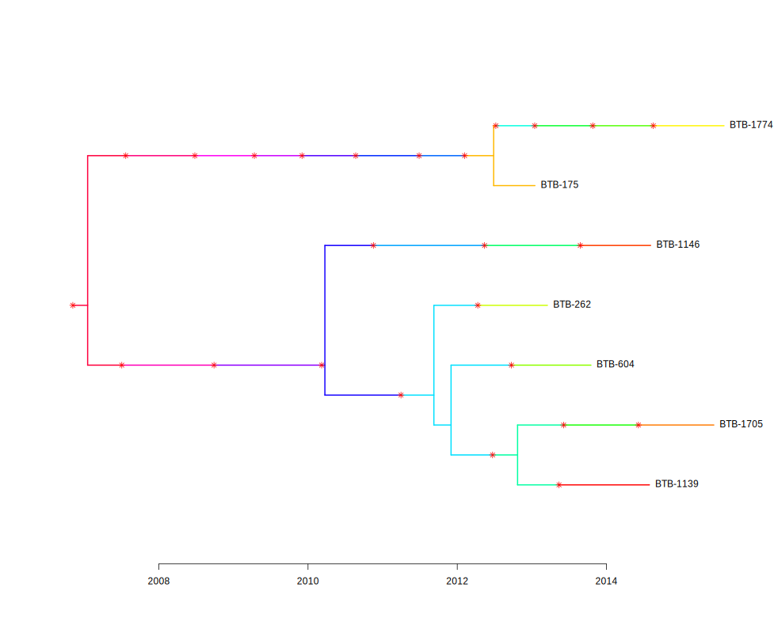
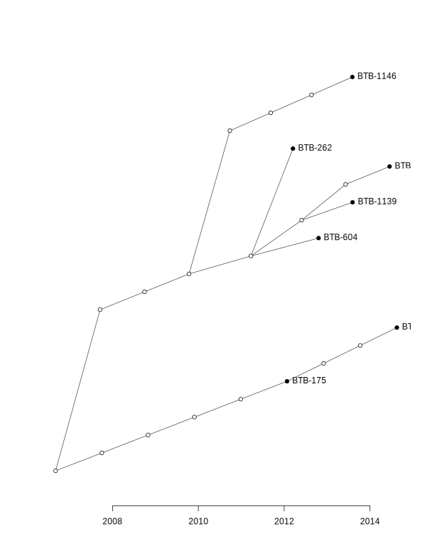
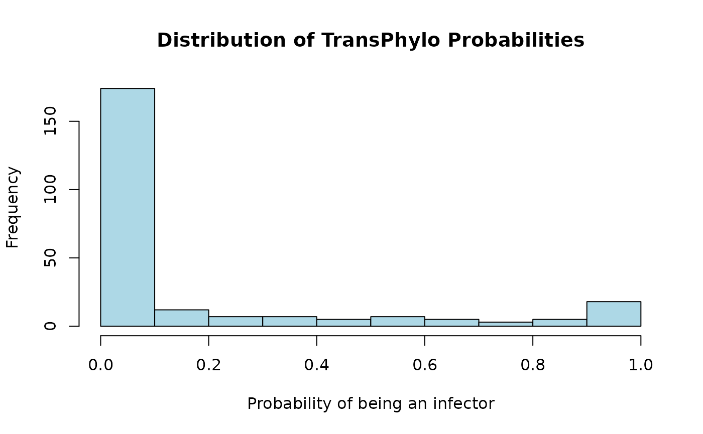
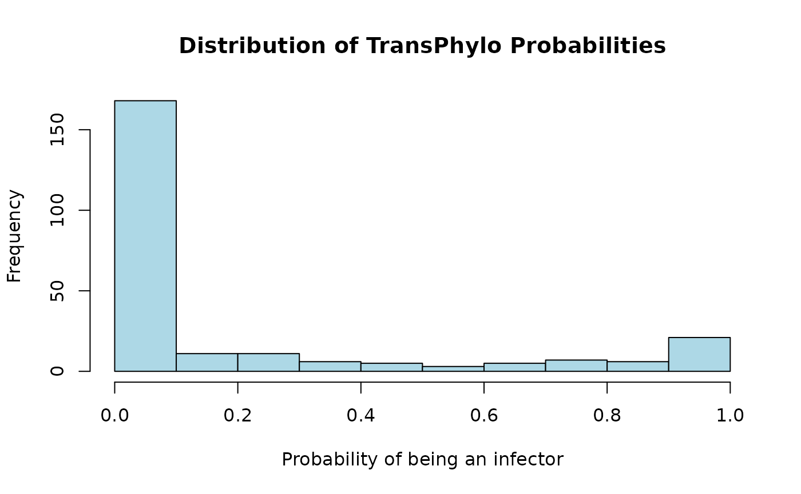
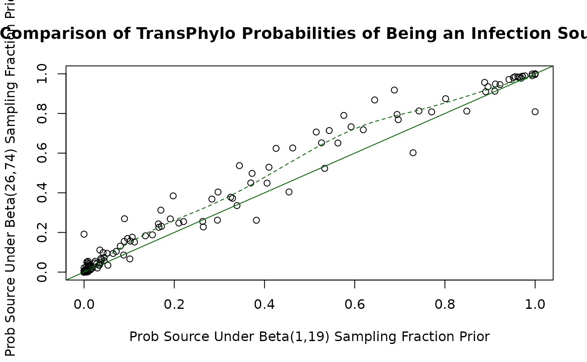

Using the BEAST2 - TransPhylo Pipeline with Maximum Clade Credibility Trees
mcc_tree_pipeline.RmdIntroduction
This vignette will walk you through the process of using the
beast2tpPipeline package to create SNP clusters from a set
of fasta files, create xml files for each cluster, run BEAST2, run
TransPhylo on the BEAST2 results, and then do some kind of regression on
the probabilities assigned by TransPhylo.
After running BEAST2, we have a set of posterior trees for each cluster. With this package we can do two things:
- Create a maximum clade credibility (MCC) tree from the posterior trees, and run TransPhylo multitree on the MCC trees, sharing some parameters that can be simultaneously estimated. The MCC tree is a single tree that attempts to summarize the posterior trees, like a mean or median when posterior samples are values from the real line. With this method we take one tree that summarizes the posterior trees for each cluster, and run TransPhylo on all of them as if they are the true phylogenetic trees.
- Subsample some number of trees from the BEAST2 posterior tree samples for each cluster, and run TransPhylo on a sample of trees for each cluster, rather than one summary tree. This has the advantage of accounting for some of the phylogenetic uncertainty in the BEAST2 trees, rather than assuming that one tree is the truth. However, it is computationally more expensive: instead of one TransPhylo run on all the clusters, we have to run TransPhylo on each cluster separately, each time with a decently-sized set of trees. This should be run on a computing cluster. Additionally, via this method, parameter sharing is not possible.
In this vignette, we will use this package to do (1). For the vignette on (2), see Using the BEAST2 - TransPhylo Pipeline with a Sample of BEAST2 Iterations (Posterior Trees).
First, load the package with library.
Data for this Example
This package comes with data collected from the Kopanyo study, in which tuberculosis (TB) samples were collected in two regions of Botswana, a country with high prevalence of both TB and human immodeficiency virus (HIV). Read more about the study here.
These data contain 4 fasta files, one for each lineage of TB. Each fasta file contains aligned TB sequences from study participants. There is also metadata available for these samples, including things like HIV status, age, gender, sample collection date, and a handful of other variables.
Suppose we are interested in using these TB sequences to draw inference on whether having HIV makes an individual more likely to transmit TB to someone else.
Creating Single Nucleotide Polymorphism (SNP) Clusters
First, read the fasta files and the metadata into R.
fasta_files <- list.files(system.file("kopanyo", package = "beast2tpPipeline"),
pattern = ".fasta", full.names = TRUE)
tb_sequences <- lapply(fasta_files, ape::read.dna, format = "fasta",
as.character = TRUE)
metadata <- list.files(system.file("kopanyo", package = "beast2tpPipeline"),
pattern = ".csv", full.names = TRUE)
metadata <- read.csv(metadata)We can take a peek at the data:
head(metadata)## SampleID Lineage genderf1 agenew hivfinal_new gMixture collectdt smokef1
## 1 BTB-1139 1 1 52 1 0 2014-07-30 1
## 2 BTB-1146 1 1 43 1 1 2014-08-05 1
## 3 BTB-1705 1 1 70 2 1 2015-06-10 1
## 4 BTB-175 1 2 19 1 1 2013-01-16 2
## 5 BTB-1774 1 1 38 1 1 2015-07-30 2
## 6 BTB-1894 1 1 15 NA 1 2015-10-16 2
## tb_everf3 alcohol_excess Lineage_detailed
## 1 2 2 1.1.2
## 2 2 1 1.1.2
## 3 1 2 1.1.2
## 4 1 2 1.1.2
## 5 1 2 1.1.2
## 6 1 2 1.1.2
dim(metadata)## [1] 1426 11Notice that we have 1426 sequences and corresponding metadata. It would be very computationally intensive to run BEAST2 on all of these sequences simultaneously. Instead, we will create clusters of similar sequences and run BEAST2 on each cluster separately. To create clusters, we will use SNP thresholding.
SNPs are single nucleotide polymorphisms, which are single base pair
differences between sequences. We can use these differences to group
sequences into clusters that are more likely to be closely related to
each other. We will use the transcluster package to do
this. transcluster is a package developed alongside the
paper Beyond the
SNP Threshold: Identifying Outbreak Clusters Using Inferred
Transmissions. It was built to handle both plain SNP thresholding to
create clusters, and also clustering based on likely transmissions. Here
we will use the former, as it is simpler and more commonly used, but the
latter is still available in the function.
To assign sequences to their clusters based on SNPs, we will use
assign_snp_clusters, which is a wrapper around some
transcluster functions.
# Get collection dates by lineage
collectdts <- split(metadata, metadata$Lineage)
# Create named vectors of dates, as required by the function
collectdts <- lapply(collectdts, function(meta) {
dates <- meta$collectdt
names(dates) <- meta$SampleID
dates
})
# Apply the function to each lineage of sequences
cluster_assignments <- mapply(assign_snp_clusters,
# `seqs` is a matrix of sequences
seqs = tb_sequences,
# `collectdts` is a named list of vectors of collection dates
# where the elements are collection dates and the names are sample IDs
collectdts = collectdts,
threshold = 5,
SIMPLIFY = FALSE)## Creating SNP-based clusters
## Creating SNP-based clusters
## Creating SNP-based clusters
## Creating SNP-based clustersComputing the distance matrix for large clusters can take time, so if
you already have a distance matrix saved, you can pass it to
assign_snp_clusters with the dist_matrix
argument.
Now we have:
# Rename clusters to include lineage
cluster_assignments <- lapply(seq_along(cluster_assignments), function(i) {
cluster_assignments[[i]]$cluster_name <- paste0("lineage", i, "_", cluster_assignments[[i]]$cluster_name)
cluster_assignments[[i]]
})
# Take a look at the cluster assignments
lapply(cluster_assignments, head)## [[1]]
## sample_id cluster_name collectdt
## 1 BTB-1023 lineage1_cluster1 2014-05-13
## 2 BTB-1058 lineage1_cluster2 2014-06-04
## 3 BTB-1088 lineage1_cluster3 2014-06-25
## 4 BTB-10 lineage1_cluster4 2012-09-10
## 5 BTB-1133 lineage1_cluster5 2014-07-25
## 6 BTB-1139 lineage1_cluster6 2014-07-30
##
## [[2]]
## sample_id cluster_name collectdt
## 1 BTB-1000 lineage2_cluster1 2014-04-28
## 2 BTB-1014 lineage2_cluster2 2014-05-07
## 3 BTB-1025 lineage2_cluster3 2014-05-13
## 4 BTB-1115 lineage2_cluster4 2014-07-16
## 5 BTB-1123 lineage2_cluster5 2014-07-16
## 6 BTB-1160 lineage2_cluster6 2014-08-12
##
## [[3]]
## sample_id cluster_name collectdt
## 1 BTB-119 lineage3_cluster1 2012-12-03
## 2 BTB-1259 lineage3_cluster2 2014-09-25
## 3 BTB-1344 lineage3_cluster3 2014-11-11
## 4 BTB-1410 lineage3_cluster1 2014-12-10
## 5 BTB-155 lineage3_cluster1 2013-01-07
## 6 BTB-1698 lineage3_cluster1 2015-06-08
##
## [[4]]
## sample_id cluster_name collectdt
## 1 BTB-1001 lineage4_cluster1 2014-04-28
## 2 BTB-1003 lineage4_cluster2 2014-04-25
## 3 BTB-1005 lineage4_cluster3 2014-04-30
## 4 BTB-1007 lineage4_cluster4 2014-05-02
## 5 BTB-1009 lineage4_cluster5 2014-05-05
## 6 BTB-1010 lineage4_cluster6 2014-05-05Next, we will create the actual BEAST2 clusters containing the
genetic data using the create_BEAST2_clusters function. We
will take the sequences, split them into separate objects, and keep only
the SNPs (sites that are the same across all sequences will not matter
to BEAST2).
We will discard clusters with fewer than 4 sequences, and clusters with fewer than 8 SNPs. We also add constant sites to the sequences, to deal with ascertainment bias in BEAST2 due to the fact that we are only keeping the SNPs.
# For each lineage, use the cluster assignments to put the sequences
# into clusters
snp_matrices <- lapply(seq_along(tb_sequences), function(lineage_index) {
# Pull the sequences and cluster assignments for this lineage
tb_seq_lineage <- tb_sequences[[lineage_index]]
cluster_assignments_lineage <- cluster_assignments[[lineage_index]]
create_BEAST2_clusters(seqs = tb_seq_lineage,
cluster_assignments = cluster_assignments_lineage,
min_cluster_size = 4,
min_varsites = 8,
snps_only = TRUE,
constant_sites = "acgt")
})
# Take a look at the clusters from the first lineage
snp_matrices[[1]]## $lineage1_cluster6
## [,1] [,2] [,3] [,4] [,5] [,6] [,7] [,8] [,9] [,10] [,11] [,12] [,13]
## BTB-1139 "a" "c" "g" "t" "c" "c" "g" "c" "t" "c" "c" "t" "c"
## BTB-1146 "a" "c" "g" "t" "a" "t" "g" "c" "t" "t" "t" "t" "c"
## BTB-1705 "a" "c" "g" "t" "c" "c" "g" "t" "t" "c" "c" "t" "c"
## BTB-175 "a" "c" "g" "t" "c" "c" "g" "c" "t" "c" "c" "c" "t"
## BTB-1774 "a" "c" "g" "t" "c" "c" "c" "c" "t" "c" "c" "c" "t"
## BTB-262 "a" "c" "g" "t" "c" "c" "g" "c" "t" "c" "c" "t" "c"
## BTB-604 "a" "c" "g" "t" "c" "c" "g" "c" "c" "c" "c" "t" "c"
## [,14] [,15] [,16] [,17] [,18]
## BTB-1139 "g" "g" "c" "c" "g"
## BTB-1146 "g" "g" "c" "c" "a"
## BTB-1705 "g" "g" "c" "t" "g"
## BTB-175 "a" "t" "t" "c" "g"
## BTB-1774 "a" "t" "t" "c" "g"
## BTB-262 "g" "g" "c" "c" "g"
## BTB-604 "g" "g" "c" "c" "g"
##
## $lineage1_cluster7
## [,1] [,2] [,3] [,4] [,5] [,6] [,7] [,8] [,9] [,10] [,11] [,12] [,13]
## BTB-1332 "a" "c" "g" "t" "c" "c" "c" "g" "a" "t" "t" "c" "a"
## BTB-1645 "a" "c" "g" "t" "t" "a" "c" "t" "a" "t" "t" "c" "g"
## BTB-584 "a" "c" "g" "t" "c" "c" "c" "g" "a" "t" "t" "g" "a"
## BTB-640 "a" "c" "g" "t" "c" "c" "c" "g" "g" "c" "t" "c" "g"
## BTB-665 "a" "c" "g" "t" "c" "c" "g" "g" "a" "t" "a" "c" "a"
## [,14]
## BTB-1332 "g"
## BTB-1645 "g"
## BTB-584 "g"
## BTB-640 "a"
## BTB-665 "g"The output of this function is a list of matrices, where each matrix
is a cluster of sequences. We will use these to write into the xml file
to run BEAST2. If you are not using the template xml file available with
this package, you should save these sequences as fasta files to be
loaded into BEAUti, which you can do by providing a
fasta_dir argument to the above function.
After running the above chunks, we have two objects:
cluster_assignments, a list of lineages each containing a
dataframe giving sample IDs, cluster names, and collection dates; and
snp_matrices, a list of lineages each containing a list of
matrices, where each matrix is a cluster of sequences.
Creating XML Files for BEAST2
For each cluster, we will create an xml file for BEAST2. In general,
BEAUti is used to create xml files for BEAST2, but here we are using a
model that should be mostly the same across all clusters. For the TB
data, this package comes with a template xml and the function
create_cluster_xml that will fill in the necessary
information for each cluster. The model associated with this xml
template:
- Strict clock model
- HKY substitution model
- Coalescent constant population tree prior
- Uniform clock rate prior, user-supplied bounds
- Log-normal(1, 1.25) (w/ upper bound of 1) frequency parameter
- Log-normal(1, 1.25) transition-transversion parameter for HKY (kappa)
- Log-normal(1, 1.25) coalescent population size parameter
The function to create the xml files requires the sequences (SNPs, for us) for the cluster, the name of the cluster, the sampling dates for the sequences in the cluster, and a directory to output the xml files to.
# For each lineage, write the xml files for all clusters
invisible(lapply(seq_along(snp_matrices), function(lineage_index) {
# Get list of clusters for the lineage
lineage_seqs <- snp_matrices[[lineage_index]]
# Get cluster assignments data frame for the lineage
cluster_assignments_lineage <- cluster_assignments[[lineage_index]]
create_xml_files(seqs_list = lineage_seqs,
cluster_assignments = cluster_assignments_lineage,
out_dir = system.file("mcc_trees_example", "BEAST2",
package = "beast2tpPipeline"))
}))The function above does not return anything, but it writes xml files
to the directory specified in out_dir. Messages are printed
when each xml file is written.
Running BEAST2
Next, we will run BEAST2 on the xml files we just created. We will
use the run_beast2 function, which calls command-line
BEAST2 using system. You may need to change the
beast2_path argument depending on which version of BEAST2
you have installed and where it is installed to.
Below I have parallelized the code using the parallel
package. This is not necessary, but it can speed up the process if you
have multiple cores available. Note that this will not work on Windows,
but there are other ways to parallelize on Windows machines.
cores <- parallel::detectCores() / 2
input_xml <- list.files(system.file("mcc_trees_example", "BEAST2",
package = "beast2tpPipeline"),
pattern = "\\.xml", full.names = TRUE)
invisible(parallel::mclapply(input_xml, run_beast2, mc.cores = cores))After running BEAST2, for each cluster, we will have a log file and a
tree file. The log file logs the MCMC sampling process, and the tree
file contains the posterior trees. First, as a quick check for the
mixing of the MCMC, we can make sure the effective sample size (ESS) is
above 200 for all parameters. We can do this using the
ess_checks function, which calls on the package
tracerer.
beast_logs <- list.files(system.file("mcc_trees_example", "BEAST2",
package = "beast2tpPipeline"),
pattern = "\\.log", full.names = TRUE)
invisible(sapply(beast_logs, function(log) {
ess_checks("BEAST2", log, min_ess = 200)
}))## All ESS are above minimum threshold
## All ESS are above minimum threshold
## All ESS are above minimum threshold
## All ESS are above minimum threshold
## All ESS are above minimum threshold
## All ESS are above minimum threshold
## All ESS are above minimum threshold
## All ESS are above minimum threshold
## All ESS are above minimum threshold
## All ESS are above minimum threshold
## All ESS are above minimum threshold
## All ESS are above minimum threshold## lineage4_cluster183.log:
## ESS is too low for 2 parameters## ESS: 117 ESS: 162## All ESS are above minimum threshold
## All ESS are above minimum threshold
## All ESS are above minimum threshold
## All ESS are above minimum threshold
## All ESS are above minimum threshold
## All ESS are above minimum threshold
## All ESS are above minimum threshold
## All ESS are above minimum threshold
## All ESS are above minimum threshold
## All ESS are above minimum threshold
## All ESS are above minimum threshold
## All ESS are above minimum threshold
## All ESS are above minimum threshold
## All ESS are above minimum threshold
## All ESS are above minimum threshold
## All ESS are above minimum threshold
## All ESS are above minimum threshold
## All ESS are above minimum thresholdIf the ESS is too low, you may want to consider re-running BEAST2
with more iterations. Be sure also to look at traceplots of the MCMC
run, which is easiest to do with Tracer.
Creating Maximum Clade Credibility Trees
Next, we will create a maximum clade credibility (MCC) tree from the
posterior trees. The MCC tree is a single tree that attempts to
summarize the posterior trees, like a mean or median when posterior
samples are values from the real line. We will use the
get_mcctree function for this. get_mcctree
calls command-line TreeAnnotator from the BEAST2 suite, so you may need
to change the treeannotator_path argument depending on
where TreeAnnotator is installed.
trees_files <- list.files(system.file("mcc_trees_example", "BEAST2",
package = "beast2tpPipeline"),
pattern = ".trees", full.names = TRUE)
out_dir <- system.file("mcc_trees_example", "BEAST2", "mcctree",
package = "beast2tpPipeline")
invisible(parallel::mclapply(seq_along(trees_files), function(i) {
get_mcctree(input_treesfile = trees_files[i], output_dir = out_dir)
}, mc.cores = cores))This function outputs nothing, but MCC trees are saved to the specified output directory.
The MCC trees look like this, for example:

where there are associated error bars for each node and uncertainty in the tree topology, but this will not be accounted for by TransPhylo.
Running TransPhylo on the MCC Trees
Now that we have the MCC trees, we can run TransPhylo on them. TransPhylo is a package that tries to infer the “who infected whom” tree, or transmission tree, taking the phylogenetic tree as data. In reality, there is uncertainty in the phylogenetic tree, but TransPhylo does not account for this.
We will use the run_TransPhylo function to run
TransPhylo on the MCC trees. We first read in the MCC trees we created
above, make sure their names match the names in the cluster assignments
data frame (BEAST2 does some slight renaming of its outputs
automatically), and then run TransPhylo. We can run TransPhylo on all of
the trees at once, sharing a couple of parameters that are common across
the trees and can be estimated simultaneously.
# Read the trees and manipulate the names to make sure they match
# the names in cluster_assignments
mcc_trees_files <- list.files(system.file("mcc_trees_example",
"BEAST2", "mcctree",
package = "beast2tpPipeline"),
pattern = ".tree", full.names = TRUE)
mcc_trees <- lapply(mcc_trees_files, ape::read.nexus)
names(mcc_trees) <- gsub(".nexus", "", basename(mcc_trees_files))
names(mcc_trees) <- gsub(".*-", "", names(mcc_trees))
# Want to run trees from all lineages together, so paste the cluster
# assignments list of dataframes into one dataframe
all_cluster_assignments <- do.call(rbind, cluster_assignments)
# Run TransPhylo on the MCC trees
prob_source <- run_TransPhylo(mcc_trees,
type = "mcctrees",
cluster_dict = all_cluster_assignments,
out_dir = system.file("mcc_trees_example",
"TransPhylo",
package = "beast2tpPipeline"),
w.shape = 10,
w.scale = 0.1,
prior_pi_a = 1,
prior_pi_b = 19,
share = c("neg", "off.r"),
startNeg = 1.48,
mcmcIterations = 100000)This function outputs a data frame containing each sample ID and the
probability of that sample being an infection source, i.e., the
probability that they infected someone else with TB. It also saves the
TransPhylo results (the resTransPhylo object output by
TransPhylo::infer_multittree_share_param) as an
.rds file in the specified output directory.
We can also use the ess_checks function to check the
mixing of the TransPhylo run, but it is probably more useful to look at
the traceplots for estimated parameters. Below is an example of how to
do this, using a TransPhylo function with only the first cluster.
transphylo_res <- readRDS(transphylo_res_file)
TransPhylo::plotTraces(transphylo_res[[1]])
TransPhylo also provides methods of summarizing the posterior trees,
and plotting the result. For example, we can get the “medoid” (extension
of median) tree and plot it. Here, the phylogenetic tree is plotted with
colors, where each color represents an individual and asterisks
represent transmission events. In TransPhylo this object is called a
ctree, or combined phylogenetic/transmission tree (“colored
tree”).

There is also a “consensus” tree, which is built by combining clades
occurring in at least some fraction of the posterior samples. This tree
will not necessarily be a tree that is in the posterior samples. It can
be plotted with plot. In TransPhylo this object is called a
ttree, or transmission tree.

We may also be interested in looking at the distribution of the probabilities assigned by TransPhylo:
hist(prob_source$prob, main = "Distribution of TransPhylo Probabilities",
xlab = "Probability of being an infector", col = "lightblue")
Regression with TransPhylo Results
Finally, we can do some kind of regression with the probabilities
assigned by TransPhylo. Here we will run a linear regression with the
probabilities as the response variable and HIV status as the predictor.
We will use the regression function to do so.
# Get dataframe with covariates for regression
cleaned_data <- metadata[, c("SampleID", "hivfinal_new")]
cleaned_data <- cleaned_data[complete.cases(cleaned_data), ]
cleaned_data$hivfinal_new <- cleaned_data$hivfinal_new - 1
# Run a linear model with the probabilities from TransPhylo
mdl <- regression(method = "linear",
cleaned_data = cleaned_data,
prob_source = prob_source)
summary(mdl)We can add more covariates by adding columns to the
cleaned_data data frame. The regression
function will automatically remove rows with missing values.
# Get dataframe with covariates for regression, add age and gender
cleaned_data <- metadata[, c("SampleID", "hivfinal_new", "genderf1",
"tb_everf3", "smokef1", "alcohol_excess")]
cleaned_data <- cleaned_data[complete.cases(cleaned_data), ]
cleaned_data[, 2:6] <- apply(cleaned_data[, 2:6], 2,
function(x) as.numeric(x) - 1)
# Run a linear model with the probabilities from TransPhylo
mdl <- regression(method = "linear",
cleaned_data = cleaned_data,
prob_source = prob_source)
summary(mdl)##
## Call:
## lm(formula = prob_source ~ ., data = cleaned_data)
##
## Residuals:
## Min 1Q Median 3Q Max
## -0.22528 -0.17311 -0.15239 0.01174 0.83791
##
## Coefficients:
## Estimate Std. Error t value Pr(>|t|)
## (Intercept) 0.126011 0.057209 2.203 0.0286 *
## hivfinal_new 0.039487 0.040426 0.977 0.3297
## genderf1 -0.011014 0.043591 -0.253 0.8007
## tb_everf3 0.007609 0.049439 0.154 0.8778
## smokef1 0.052170 0.051089 1.021 0.3082
## alcohol_excess -0.020719 0.049316 -0.420 0.6748
## ---
## Signif. codes: 0 '***' 0.001 '**' 0.01 '*' 0.05 '.' 0.1 ' ' 1
##
## Residual standard error: 0.3077 on 234 degrees of freedom
## Multiple R-squared: 0.008643, Adjusted R-squared: -0.01254
## F-statistic: 0.408 on 5 and 234 DF, p-value: 0.843Alternatively, a probability threshold can be set to mark individuals
as infectors or non-infectors, and a logistic regression may be run.
This is done by setting the method argument in
regression to "logistic" and specifying a
threshold.
# Run a logistic model with the probabilities from TransPhylo
# Set the probability threshold to 0.6, where prob >= 0.6 is
# considered an infector
mdl_logistic <- regression(method = "logistic",
cleaned_data = cleaned_data,
prob_source = prob_source,
prob_cutoff = 0.6)
summary(mdl_logistic)##
## Call:
## glm(formula = tp_source ~ ., family = "binomial", data = cleaned_data)
##
## Coefficients:
## Estimate Std. Error z value Pr(>|z|)
## (Intercept) -2.57277 0.61177 -4.205 2.61e-05 ***
## hivfinal_new 0.61646 0.40656 1.516 0.129
## genderf1 -0.03172 0.42411 -0.075 0.940
## tb_everf3 -0.10814 0.50432 -0.214 0.830
## smokef1 1.03882 0.55876 1.859 0.063 .
## alcohol_excess -0.52863 0.47714 -1.108 0.268
## ---
## Signif. codes: 0 '***' 0.001 '**' 0.01 '*' 0.05 '.' 0.1 ' ' 1
##
## (Dispersion parameter for binomial family taken to be 1)
##
## Null deviance: 184.70 on 239 degrees of freedom
## Residual deviance: 178.82 on 234 degrees of freedom
## AIC: 190.82
##
## Number of Fisher Scoring iterations: 5
# Get odds ratios (adjusted for other covariates)
adj_odds_ratios <- data.frame(est = exp(mdl_logistic$coefficients),
row.names = names(mdl_logistic$coefficients))
adj_odds_ratios <- cbind(adj_odds_ratios, exp(confint(mdl_logistic)))## Waiting for profiling to be done...
adj_odds_ratios## est 2.5 % 97.5 %
## (Intercept) 0.07632382 0.02069694 0.2330317
## hivfinal_new 1.85236668 0.84517253 4.2139991
## genderf1 0.96877762 0.41671834 2.2236658
## tb_everf3 0.89750391 0.34946563 2.6086441
## smokef1 2.82587567 0.99353282 9.1007819
## alcohol_excess 0.58941296 0.23284878 1.5307532Since there is some misclassification in the infector/non-infector
status, we can also run a logistic regression with misclassification
using a simple Bayesian method. This is done by setting the
method argument in regression to
“bayesian_logistic_misclass”.
# Require that all covariates have columns of type numeric
numeric_data <- cleaned_data
numeric_data$agenew <- as.numeric(numeric_data$agenew)
numeric_data$genderf1 <- as.numeric(numeric_data$genderf1) - 1
numeric_data$hivfinal_new <- as.numeric(numeric_data$hivfinal_new) - 1
samples_logistic <- regression(method = "bayesian_logistic_misclass",
cleaned_data = numeric_data,
prob_source = prob_source,
prob_cutoff = 0.6,
sensitivity = 0.28,
specificity = 0.97)
# Pull the samples for the hiv coefficient, which are the log adjusted
# odds ratios for the logistic regression
summary(exp(samples_logistic$beta[1, ]))Exploration of the Pipeline
This package makes it very convenient to change parts of the pipeline and explore the impact of those changes on the results. For example, suppose we want to change the sampling fraction prior for TransPhylo, get new results, do linear regression with those results, and compare them to the old results.
# Run TransPhylo on the MCC trees with a new sampling fraction prior
# Using same MCC trees we have already read in
prob_source_new_pi <- run_TransPhylo(mcc_trees,
type = "mcctrees",
cluster_dict = all_cluster_assignments,
out_dir = system.file("mcc_trees_example",
"TransPhylo",
package = "beast2tpPipeline"),
output_name = "tp_res_changed_sampling_frac",
w.shape = 10,
w.scale = 0.1,
prior_pi_a = 26,
prior_pi_b = 74,
share = c("neg", "off.r"),
startNeg = 1.48,
mcmcIterations = 100000)
# Look at some traceplots again
transphylo_res <- readRDS(transphylo_res_file)
TransPhylo::plotTraces(transphylo_res[[1]])
Now we have the updated probabilities, and we can compare their distribution to their distribution under the old sampling fraction prior.
hist(prob_source$prob, main = "Distribution of TransPhylo Probabilities",
xlab = "Probability of being an infector", col = "lightblue")
We can look at individual changes in probabilities via a scatterplot, where each point represents a sample, the x-axis gives the probability under the old sampling fraction prior, and the y-axis gives the probability under the new sampling fraction prior.
colnames(prob_source_new_pi) <- c("SampleID", "prob_source_new_pi")
prob_source_pairs <- merge(prob_source, prob_source_new_pi, by = "SampleID")
plot(prob_source_pairs$prob_source, prob_source_pairs$prob_source_new_pi,
xlab = "Prob Source Under Beta(1,19) Sampling Fraction Prior", ylab = "Prob Source Under Beta(26,74) Sampling Fraction Prior",
main = "Comparison of TransPhylo Probabilities of Being an Infection Source")
abline(a = 0, b = 1, col = "darkgreen")
spline_fit <- smooth.spline(prob_source_pairs$prob_source,
prob_source_pairs$prob_source_new_pi,
df = 5)
lines(spline_fit, col = "darkgreen", lty = 2)
We can also redo our logistic (or other) regression with these new probabilities, and look at the new odds ratios.
colnames(prob_source_new_pi) <- c("SampleID", "prob_source")
mdl_logistic_new <- regression(method = "logistic",
cleaned_data = cleaned_data,
prob_source = prob_source_new_pi,
prob_cutoff = 0.6)
summary(mdl_logistic_new)##
## Call:
## glm(formula = tp_source ~ ., family = "binomial", data = cleaned_data)
##
## Coefficients:
## Estimate Std. Error z value Pr(>|z|)
## (Intercept) -2.1106 0.5318 -3.969 7.22e-05 ***
## hivfinal_new 0.3901 0.3611 1.080 0.280
## genderf1 0.1623 0.3811 0.426 0.670
## tb_everf3 -0.0882 0.4450 -0.198 0.843
## smokef1 0.4950 0.4820 1.027 0.304
## alcohol_excess -0.1397 0.4434 -0.315 0.753
## ---
## Signif. codes: 0 '***' 0.001 '**' 0.01 '*' 0.05 '.' 0.1 ' ' 1
##
## (Dispersion parameter for binomial family taken to be 1)
##
## Null deviance: 213.02 on 239 degrees of freedom
## Residual deviance: 210.53 on 234 degrees of freedom
## AIC: 222.53
##
## Number of Fisher Scoring iterations: 4
# Get odds ratios (adjusted for other covariates)
adj_odds_ratios_new <- data.frame(est = exp(mdl_logistic_new$coefficients),
row.names = names(mdl_logistic_new$coefficients))
adj_odds_ratios_new <- cbind(adj_odds_ratios_new, exp(confint(mdl_logistic_new)))## Waiting for profiling to be done...
adj_odds_ratios_new## est 2.5 % 97.5 %
## (Intercept) 0.1211602 0.03975307 0.3245642
## hivfinal_new 1.4771205 0.73109189 3.0362124
## genderf1 1.1761967 0.55457392 2.4899201
## tb_everf3 0.9155799 0.39564919 2.3125728
## smokef1 1.6405469 0.65534985 4.4001744
## alcohol_excess 0.8696210 0.36854637 2.1198239And we can compare the odds ratio for HIV status from the two models: